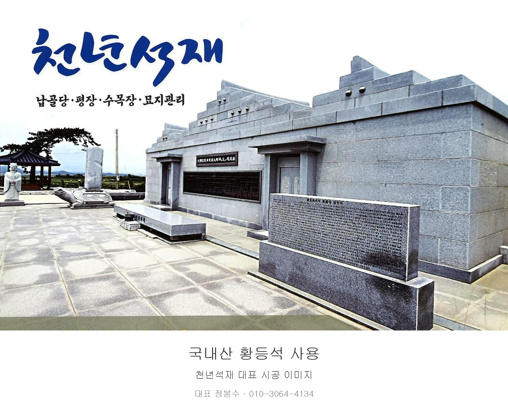
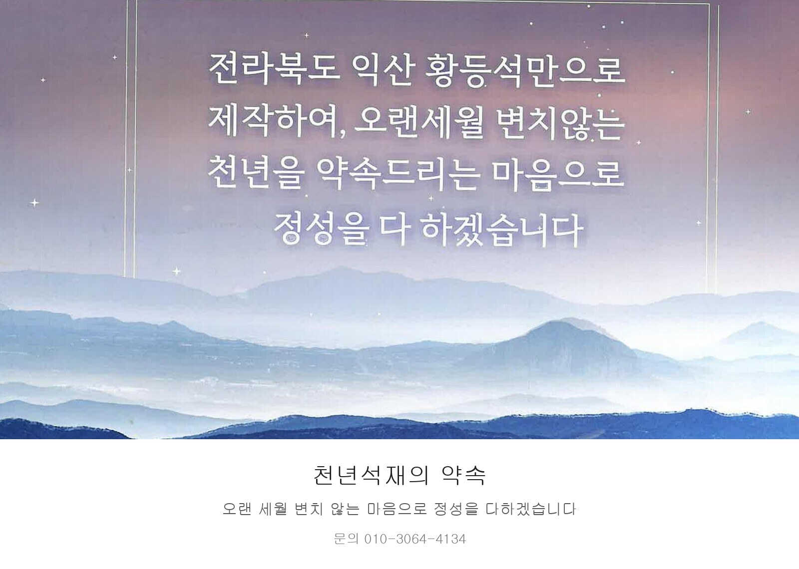

나주 중심 전남·전북·광주·영암 석재·묘역 시공 상담
천년석재
묘지관리, 벌초, 평장·납골묘·수목장 상담
국내산 황등석으로 정성껏 시공합니다
사진으로 시공 사례를 먼저 확인하세요
- 대표
- 정봉수
- 주소
- 전남 나주시 산포면 신남로 177

주요 시공 분야
묘역에 맞는 석재 시공과 관리
시공 사례
사진으로 보는 천년석재

문의
천년석재 대표 정봉수
나주 중심 전남·전북·광주·영암 묘역 시공 상담
나주 중심 전남·전북·광주·영암 석재·묘역 시공 상담
묘지관리, 벌초, 평장·납골묘·수목장 상담
국내산 황등석으로 정성껏 시공합니다
사진으로 시공 사례를 먼저 확인하세요

주요 시공 분야
시공 사례

문의
나주 중심 전남·전북·광주·영암 묘역 시공 상담